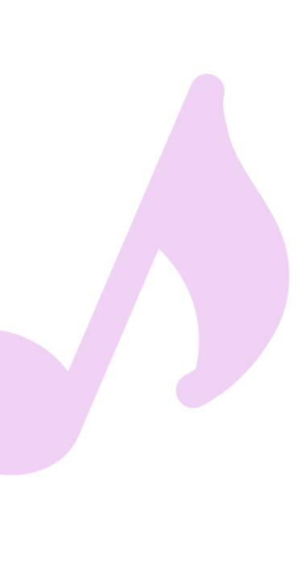
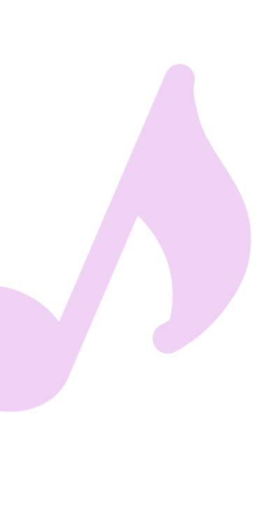

Femusic is a website dedicated to the feminist cause in the music world.
Discover complete, current and exciting articles mixing music and feminism.
 



Biography of Angèle, pop singer. Discover how and why this young Belgian artist is now considered a true figure of modern feminism.

Discover how Angèle's 2018 first album 'Brol' is a contemporary and engaging work.

From 1848 to the present day, many singers have expressed their views on feminism. Discover in this original and current article 9 feminist music through this period.
Angèle's latest music video featuring rapper Damso